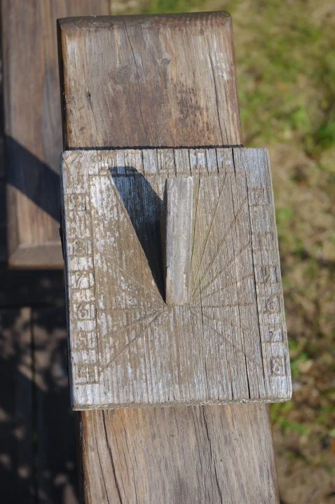
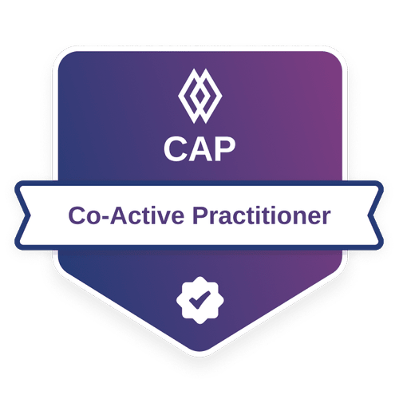

One-to-one coaching for people in the middle, questioning what's next and ready to live with more purpose.

You've built a career and you're good at it, but a quiet question keeps surfacing: is this it? Maybe you're facing a transition, a reinvention, or a retirement you can't picture. Maybe you're just tired in a way rest doesn't fix.
Our lives make more sense when we stop sprinting through them.
I'm a guide. My work is helping you uncover what's most important to you, then move toward it with clarity and a little courage. It isn't about fixing you. It's about coming home to yourself and building the next chapter on purpose.
You don't need to earn your worth.
You were born with it.
I'm an ICF member, a Co-Active practitioner, and a LINC-certified coach, and I came to this work the same way you might: by living the messy middle myself.

Connect on LinkedIn →“Working with Andi was a powerful experience. From the start, she made me feel seen, heard, and supported, which was exactly what I needed at that point in my career.
Nichole
“Andi was exactly the coach I needed at this stage of my life. She helped me take a business idea that had lived in my heart for years and begin turning it into something real and actionable.
Ruth
The faster you're going, the less you can actually see.